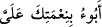

değersizliğinin, kıymet olarak daha ucuz oluşundan olduğunu söylemiştir. Âyetten,
onların kudret helvasının ve bıldırcın etinin kesilmesini istemedikleri; ancak diğer
yiyeceklerle beraber nöbetleşe gönderilmesini istedikleri anlaşılmaktadır. Zira onlar,
biz bir çeşit yemekle yetinemeyiz, bazen şu; bazen bu yiyeceği isteriz, demek
istemektedirler.
O halde Mısır’a inin. Herhalde istedikleriniz sizin için orada vardır dedi. İşte
üzerlerine zillet ve yoksulluk damgası vuruldu. Allah’ın gazabına uğradılar. Bu
musîbetler Allah’ın âyetlerini inkâra devam etmeleri, haksız olarak peygamberleri
öldürmeleri sebebiyle geldi. Onların hepsi, sadece isyanları ve düşmanlıkları
sebebiyledir.
Mâdem ki çeşit çeşit yemekler istiyorsunuz o zaman şehirlerden birine inin. Tîh’den
çıkın; çünkü sizin istedikleriniz çölde değil, ancak şehirlerde bulunur. Mısır’dan
maksad Fir’avn’ın Mısır’ı değil, herhangi bir şehirdir. Çünkü Kur’ân’da: “Ey
Kavmim! Allah’ın size yazdığı mukaddes toprağa girin.” (el-Mâide, 55/21)
buyurularak onlara mukaddes bir şehre girmeleri emrolunmaktadır. Bu duruma göre
Fir’avn’ın Mısır’ına dönmeleri imkânsızdır.
Arapça’da şehre “mısır” denir. Mısır, kelimesi (
) fiilinden bir şeyi kesmek
mânâsına gelir. Şehirler yüksek binâları ile boşluklardan kesildikleri için, “Mısır”
ismini almıştır. Köylere “mısr” denilebildiği gibi, şehirlere de köy mânâsına gelen
“karye” adı verilebilir. Belli bir şehirden söz edilirse “Mısr” gayr-i munsarıfdır;
ancak âyetteki şehir, herhangi, belirsiz bir şehir olduğu için munsarıf olarak gelmiştir.
Bazıları bu Mısır’dan kasdın, “Fir’avn’ın Mısırı” olduğunu söylemişlerdir. Kelimenin
munsarıf olması ise Nûh, Hind gibi orta harfinin sâkin olmasından veya “Mısır” şehri
değil de, o beldenin kasdedilmesinden dolayıdır, demişlerdir. Bu durumda sadece
alemiyyet şartı olup gayr-i munsarıf olmasını sağlayacak ikinci şart bulunmamaktadır.
Allah, onların şehre inmelerinin sebebini açıklayarak istedikleri sebzeleri şehirde
bulabileceklerini beyân etmektedir. Bunun üzerine onlara aşağılık, zillet ve fakirlik
damgası vuruldu. Fakirlik kişiyi hareketten alıkoyduğu; yâni hareketsiz bıraktığı için
fakirliğe “sükûnet” kökünden “meskenet” fakîre de miskîn denilmiştir. Aşağılık ve
fakirlik onların üzerlerini kubbe gibi kuşatmıştır. Veya bu iki haslet, onlara yapışmış,
onlar için ayrılmaz iki damga olmuştur. Öyle ki çamurun duvara yapıştığı gibi, onların
nankörlüklerine cezâ olarak bu iki haslet de onların yakasına yapışmıştır. Kur’ân’ın bu
benzetmesi kinâyeden istiâre olup, gerçekten Yahûdîler zengin bile olsalar, sanki sen
onları fakir zannedersin, demektir.
İsrâîloğulları, Allah’dan gelen büyük bir gadabla döndüler. Yâni bu gadaba müstehak
oldular. (
) fiili Peygamberimiz’in bir hadîsinde bu mânâda kullanılmıştır. (
) “Bana verdiğin nimetinle sana dönerim” buyurulmuştur. Allah onları,
dünyâda kınamak, âhırette cezâlandırmakla gadabına uğrattı.
Onlara zillet ve meskenet damgasının vurularak, Allah’dan büyük bir gadabla